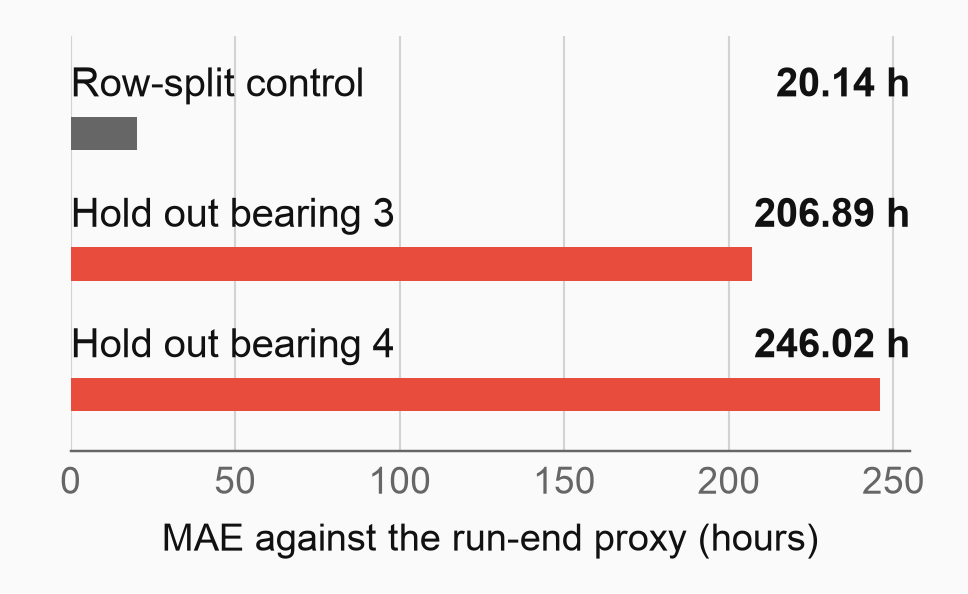
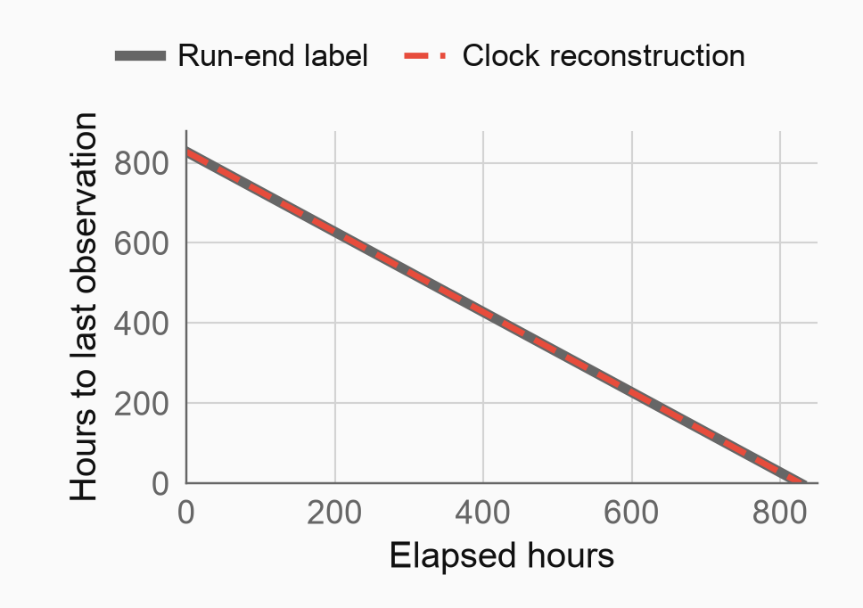

From vibration to a prediction prototype
IMS Set 1 was one rig run shared by four bearings. It contains 2,156 vibration recordings, each with 20,480 samples per channel at 20 kHz across eight channels.
Vibration → RMS, kurtosis and bandpower → rolling statistics, exponential moving averages and cross-axis summaries → Random Forest and LightGBM.
I tuned LightGBM with Optuna and built a Streamlit dashboard and FastAPI endpoint to explore the remaining-life predictions.
How the row split leaked information
I split individual sensor rows into train and test, stratified by the target. Opposite axes from the same bearing and timestamp could land on either side.
| Split | Train | Test |
|---|---|---|
| Sensor rows | Bearing 3 X axis | Bearing 3 Y axis |
| Physical bearing | Bearing 4 Both axes | Bearing 3 Both axes |
I also computed temporal and cross-axis features before splitting, then tuned on the partition I later scored as test. I withdrew the original accuracy claims. The values are preserved in the historical archive.
Holding out a bearing raised the error
For the LightGBM rerun, I rebuilt features within each fold and fit normalization and imputation on training rows. The row-split control still shared bearing timestamps across train and test.

The label counted down to the last observation
Both held-out bearings shared the same final timestamp. Starting with the training bearing’s initial countdown and subtracting elapsed time reproduced the label on each held-out trajectory.

Why I stopped at condition monitoring
I scored each bearing’s vibration against its early-run baseline, required sustained deviation before raising an alert, and abstained when evidence was insufficient. Then I compared the monitor with a common elapsed-time schedule.
| Check | Result |
|---|---|
| Alert state differed from schedule | 4,311 of 8,624 matched bearing timestamps |
| Alert burden ranking changed | 6 of 8 variants |
| Alert onset order available | 0 of 8 variants |
The frozen inspection policy failed its robustness gate, so I stopped at condition monitoring. The research closeout records the decision, and the GitHub repository contains the code.
← Back to Projects